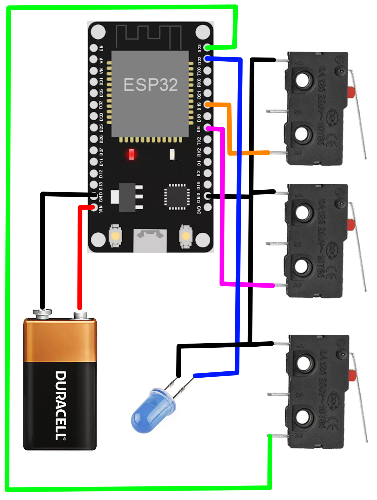
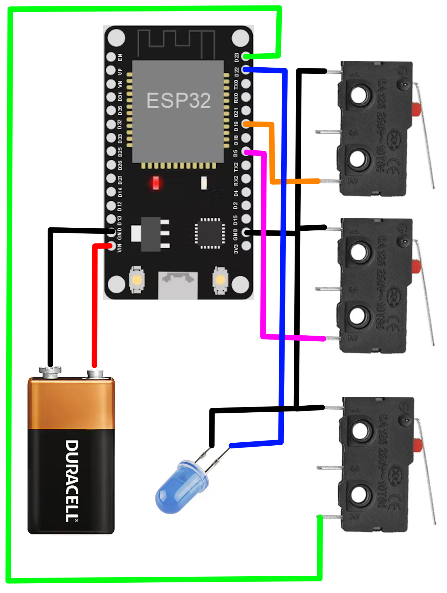

Block Printing
Brief history of block printing
Block printing is the process of carving a negative of a graphic image or text into traditionally wood, but now modern materials such as linoleum can be used for easier carving, and then covering it in ink and pressing it down onto a medium. This technique first originated in China, where the oldest surviving examples date to around 220 AD. Block printing was the most common method of printing books, texts, and images throughout East Asia from the 7th to the 19th centuries. In Europe, this technique appeared around the mid 15th century, around the time as the printing press.

Violin - My first block printing piece
This piece was made from carving a thin piece of linoleum to remove the white space. I chose linoleum because it is much easier to carve than wood, but because of it's malleability, it can be harder to have fine details after squishing it inside the press. In making this block print, I learned that one must carve the design as a mirror of what you want the final piece to look like. This is because either the block is flipped onto the paper and then run through a press, or vice versa, so it behaves like a stamp. This is why in this piece the violin looks strange for someone who is familiar with the anatomy of the violin.
A Night-time Camp - My second block print
This piece represents a campsite overlooking the Tetons in Jackson, WY. Armed with the knowledge I learned from my first print, I created this next print. For this one I wanted to make sure the mountain range looked correct compared to it's real-life counter part, so it had to be carved mirrored. One method of achieving this is to watch what you are doing through a mirror while looking at a normal reference sketch. However the method I used, since I was using a photo taken on my phone as a reference, was to just use a program such as Photoshop to reverse the image and carve based on that.

Silk-Screen Printing
Brief history of silk-screen printing
Silk screen printing, or sometimes called just screen printing, refers to the process of pressing ink through a mesh screen with a stencil made of hardened emulsion onto some medium. This method also has its origins in China, with its first recognizable examples being from the Song Dynasty. The modern screen printing methods, such as using photo-reactive emulsion to create the stencil, began to emerge in the early 1900's. Screen printing was popularized in the 1960's by the likes of Andy Warhol as a form of artistic expression. Currently, this method is mostly used in t-shirt and other garment production as well as circuit board printing and more.

Just Send It! - T-Shirt
This design comes from my enjoyment of skiing and represents hitting a jump. This was also my first t-shirt design, a simple two color print. Multiple colors in screen printing are typically done using multiple stencil designs, one for each color. Then you print one at a time, lining each new color up with the previous ones. When doing multiple colors by hand on a shirt, it can be relatively difficult to align each layer on fabric.
Sunset over the Tetons - Seven color split-fountain print
This piece represents watching the sunset behind the Grand Teton on a summers eve. Split-fountain is the technique where you mix multiple colors together on the same stencil pattern, which can result in some pretty cool effects. A characteristic of split-fountain is that every print you make is slightly different, since the color continue to mix together with each pass on the paper. In this piece I used that method three times, one for the sky, one for the mountains, and then one for the grass below. Getting seven colors to align on a single print over the course of a 4-hour printing session can prove to be quite the challenge. But for me that is part of the fun of it.


Resting Wyvern - Five color print
This piece was my most recent work made based from the line-work of one of the wyverns my brother drew. Another challenge of screen printing is coming up with a plan for what colors go down first, and what order you put down the rest. The order in which you print the layers can not only change the look of the final piece, but can also be used to hide mistakes in previous layers.
Film Photography

Film cameras I use
The two film cameras I use are the Nikon F (left) and Olympus Trip 35 (right). The Nikon F camera line was Nikon's first SLR camera produced from 1959 to 1973 and was considered to be the most advanced camera of the time. This particular Nikon is particularly special to me because it was purchased by my grandfather brand new in 1969. The Olympus Trip 35 was a point and shoot automatic camera produced from 1967 to 1984.

The operation of this camera is very fascinating to me because it uses no batteries at all to select from 1/40s or 1/200s shutter speed and select an aperture from f/2.8 to f/22. It does this by using a solar-powered selenium light meter, which can be seen surrounding the lens. The photographer sets the films ISO value from 25iso to 400iso on a dial on the front of the lens, this dial mechanically blocks sections of the light meter to make it compensate for slower film speeds.

FoCo Street Photography
- 200iso FujiFilm
One of many photos in my October 2024 Fort Collins street photography series. Shot on my Nikon F with 200iso FujiFilm 35mm film.
FoCo Street Photography
- 200iso FujiFilm
One of many photos in my October 2024 Fort Collins street photography series. Shot on my Nikon F with 200iso FujiFilm 35mm film.


FoCo Street Photography
- 200iso FujiFilm
One of many photos in my October 2024 Fort Collins street photography series. Shot on my Nikon F with 200iso FujiFilm 35mm film.
This photo series was scanned using my (new to me) Plustek OpticFilm 7200.
Jackson WY, Nature
One of the many photos in my September 2023 Jackson WY, nature photography series. This photo was shot on the top of Munger Mt. on my Nikon F with 100iso Kodiak 35mm film.
This photo series was scanned using my older CannoScan FS4000.


Upper Left
Shot on my Nikon F from the top of Munger Mt.
Lower Left
Shot on my Olympus Trip 35 at the Church of the Transfiguration in Grand Teton NP.
Right
Shot on my Olympus Trip 35, along the Moose-Wilson Road in GTNP.

Digital Photography
Aurora Boriallis
This photo was taken in May of 2024 with my Nikon D5100 on the Jackson Hole Elk Refuge. Capturing this event was super cool and I hope I get another chance in the future with more sophisticated lenses and filter to capture even more detail.


Aurora Boriallis, Behind the Scenes
Shot on my IPhone before I could see the aurora with my eyes. The aurora only lasted about 15 minutes in total after taking this photo and I could see it with my naked eyes for less than half of that.
MusicLand Board Member

I have served on the MusicLand Board for the past three years. MusicLand is a non-profit and their mission is musical education from preschool to high school and beyond. My role within the organization is mostly the maintenance of their website, but I have also helped out in other ways as well. I continue to serve on the Board because I have strong connection to music and I believe music education is very important.
The Colorado Bevi Website

This website was programmed from scratch, aside from the Bootstrap JavaScript plugin, using HTML, CSS, and JavaScript by me. The source code for this website is also viewable on my GitHub account, along with several other projects. I wanted to make this website from scratch instead of using a website builder because I wanted a more challenging project for myself.
College Senior Project
Remote Unlocking System for Older Vehicles
The original idea for this project was to add remote locking and unlocking to my 1986 Toyota 4Runner. The premise was rather simple, just have two micro-controllers communicate wirelessly where the vehicle receiver operates relay boards for high-torque servos that are connected to the locking rod inside the door panel. I set out with three main goals for the first prototype:
- The main control unit should be able to detect the keys presence and automatically unlock the car when you are close.
- Be able to automatically lock the vehicle when the key is no longer detected (in case the user forgot to lock the doors).
- Lastly, the device should be able to function as a normal key fob (i.e. unlock/lock car with the press of a button).
Unfortunately, due to time constraints, only the final goal was successfully implemented. However, I did learn quite a bit with this project since it was my first major project where I was doing the equivalent of serving as all team members of a typical professional project simultaneously.
Reciever Images


Software
In terms of software, rolling codes are typically used for authenticating a key-fob with a vehicle, I wrote my own simple algorithms for generating these security codes and authenticating them on the receiver. Without getting too deep into the detail, the rolling code algorithm at its core is just two pseudo-random number generators using the same "seed" so each one will always generate the same next number. The sender uses this to generate a 32Bit code, then appends the current system time (to prevent whats called a Rolljam attack), and then appends the commanding action code. The receiver then checks the security code to make sure it matches somewhere within the next dozen codes (to prevent the independent algorithms from becoming out of sync when buttons are pressed out of range), then it checks the time code to make sure it is within a short window of time from present, and then if both things come out good it does the desired action.
Hardware
For hardware I chose the ESP32 micro-controller. I chose this particular one because of it's support of the ESP-NOW wireless communication protocol. The wiring was pretty simple, just three buttons for the sender, and some three pin header connections for the servos on the receiver, as well as some debug LEDs.
Sender Images
 

Changes if I were to make a second prototype
If I were to make a second prototype or even a final version, I would:
- Switch to using the latest Raspberry Pi Pico or design my own single board computer using the RP2040 chip. This would be much more power efficient so I could run it off a coin cell battery.
- Use an external low power radio transmitter module instead of the built in WiFi chip.